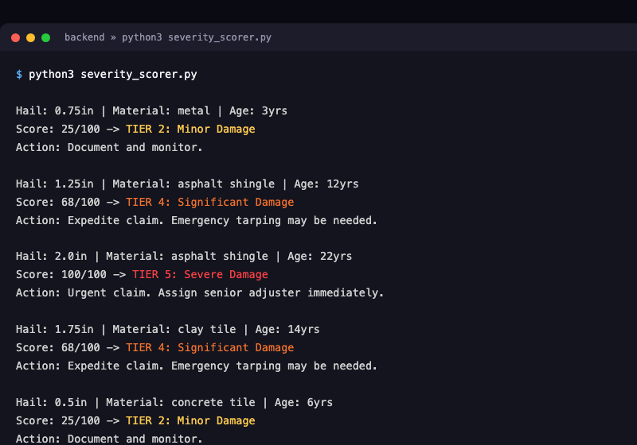
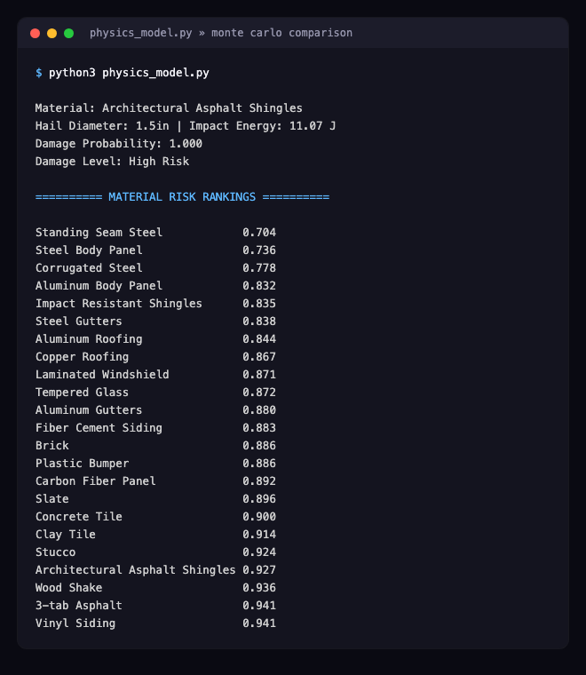

Every claim photo runs through a metadata check before an adjuster sees it, flagging things like a missing GPS coordinate or timestamp. It only flags for review, a human adjuster still makes the final call, so the process stays fast for honest claims while catching the ones that need a second look.
Hail size, roof material, and roof age go in, a 5-tier severity score comes out, fully rules-based and explainable tier by tier. This is real output from severity_scorer.py, not a mockup.

Kyle built a physics-based model that calculates real hail impact energy and compares it against each material's toughness, then stress-tests it across 1,000 simulated storms per material to rank real-world risk. This is real output from his simulation, still being calibrated for realism.

Eye in the Sky pairs two systems: a rules-based severity score, and an AI model that verifies damage from photos. Together, they help Travelers triage properties faster after a storm.
The AI vision piece that verifies these scores from real photos, how it works, how it was built, and where it's headed next, has its own dedicated page.
See the AI Model →